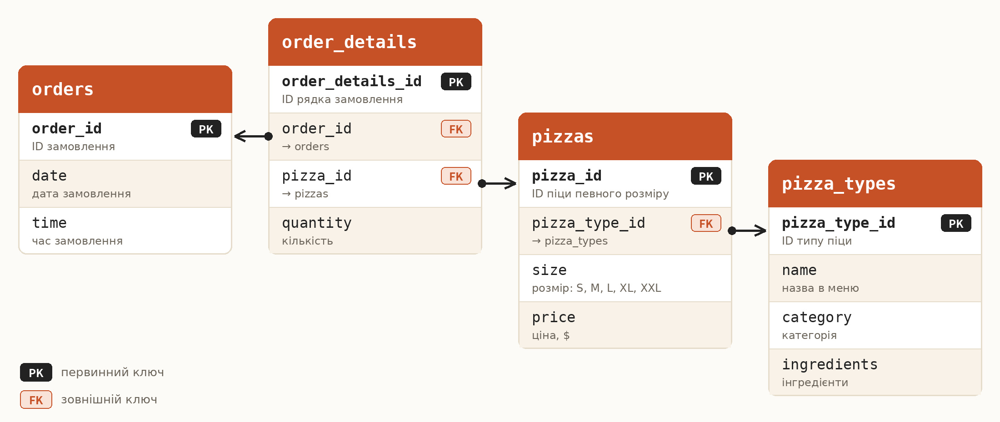
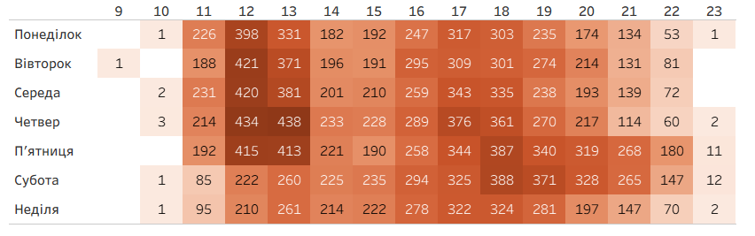
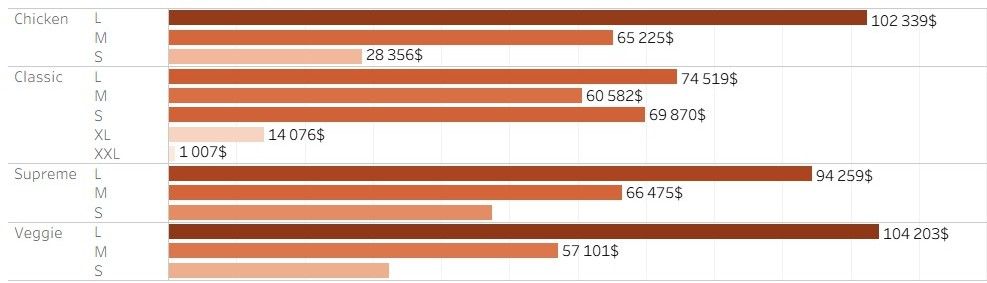

Операційний та фінансовий аналіз піцерії
Підсумковий проєкт з бізнес-аналітики та візуалізації даних
🍕 Pizza Sales Analytics
Комплексне дослідження річних показників продажу, поведінки покупців, оптимізація робочих годин та побудова інтерактивного дашборду.
Автор: Олександр Колесниченко
Курс: Data Analytics & Visualization Expert
Дата: Жовтень 2026
Бізнес-контекст та аналітичні питання
Вихідні умови задачі та ключові виклики піцерії
Бізнес-ситуація
Мережа піцерій стикнулася зі спадом річного тренду та нерівномірним навантаженням. Необхідно провести аналіз транзакцій за рік, виявити драйвери виручки та слабкі годинні зони.
Ключові аналітичні питання (8 питань проєкту):
- 1. Загальна виручка, кількість замовлень та середній чек?
- 2. У який місяць пік продажів, а в який — мінімум?
- 3. Які години доби є найбільш навантаженими?
- 4. Як розподіляються замовлення за днями тижня (теплова карта)?
- 5. Які категорії та розміри піци генерують найбільше доходу?
- 6. Які години є найбільш збитковими (слабкими)?
- 7. Чому спостерігається зниження річного тренду виручки?
- 8. Які заходи допоможуть зупинити спад і підвищити ефективність?
Архітектура та структура реляційної бази даних
Зв'язки між таблицями датасету Pizza Place Sales (4 основні сутності)

Особливості моделі даних
База даних спроєктована за нормалізованою схемою. Таблиця order_details виконує роль зв'язуючої сутності між чеками (orders) та довідником піц (pizzas), що дозволяє точно фіксувати кількість і вартість кожної позиції.
Ключові показники датасету
- Загальний обсяг: понад 16 000 чеків за рік.
- Товарна база: 4 категорії меню та різні варіанти розмірів.
- Цілісність: використання первинних (PK) та зовнішніх (FK) ключів.
Очищення, перетворення та підготовка даних
Етапи підготовки датасету до аналізу та побудови візуалізацій
ЕТЛ Процес
- Перевірка пропусків: Контроль цілісності ключів між таблицями.
- Форматування: Виділення годин та днів тижня.
- Метрики: Розрахунок загальної вартості позиції (`quantity * price`).
SQL-закладка
SELECT EXTRACT(HOUR FROM order_time) AS h,
COUNT(DISTINCT order_id) AS orders
FROM orders GROUP BY 1 ORDER BY orders DESC;
Аналітичне питання 1: Основні фінансові показники
Яка загальна виручка, кількість замовлень та середній чек за звітний період?
Висновок
Заклад має стабільний обсяг транзакцій з високим середнім чеком ($38.31), що свідчить про комплексні замовлення кількох піц в одному чеку.
Аналітичне питання 2: Динаміка та сезонність
У який місяць зафіксовано пік продажів, а в який — мінімальні показники?
📈 Піковий місяць: Липень
$72,558
Висока активність завдяки туризму та сезону відпусток.
📉 Слабкий місяць: Вересень
$64,028
Зниження виручки через закінчення літнього сезону.

Аналітичне питання 3: Пікові дні та години
В які дні тижня та години спостерігається найбільший попит?
⏰ Пікові години
12:00 – 13:00 та 17:00 – 18:00
Чітко виражені сплески під час обіду та вечері.
📅 Пікові дні
П'ятниця та Четвер
Найвища завантаженість замовленнями перед вихідними.

Аналітичне питання 4: Категорії та розміри піци
Які категорії та розміри піци генерують найбільше виручки?
🍕 Популярний розмір
Розмір L (Large)
Забезпечує левову частку виручки у всіх категоріях.
🏆 Топові категорії
Classic та Chicken / Veggie
Найвищий сукупний попит серед клієнтів.

Аналітичне питання 6: Оптимізація графіку роботи
Чи є години з мінімальною кількістю замовлень, які є збитковими?
⚠️ Збиткові години
10:00 та 23:00
Мінімальна кількість замовлень за весь період спостереження.
💡 Рекомендація
Оптимізація змін
Скорочення робочого часу або персоналу для зниження витрат.
Аналіз причин спаду річного тренду
Чому спостерігається зниження показників та які стратегічні рішення потрібні?
📉 Основні причини
Відтік клієнтів та відсутність маркетингу
Системне зниження показників протягом року через брак активностей.
🎯 Стратегічні кроки
Комбо-набори та ретеншн
Збільшення середнього чека та проведення кампаній з повернення покупців.
Інтерактивний дашборд аналітики продажів
Повна панель керування ключовими показниками у реальному часі

🚀 Швидка навігація
Перемикайте вкладки на дашборді вгорі для відповідного розрізу:
📈 Revenue Trends
Динаміка та Маркетинг: Аналіз річної виручки ($817.8K), сезонних піків та оновлення тренду.
⏰ Operations & Staffing
Завантаження закладу: Погодинна теплова карта, пікові години та оптимізація змін персоналу.
🍕 Menu Analysis
Асортимент та хіти: Рейтинг піц (Top N), розподіл за категоріями та розмірами.
💡 Інтерактивність:
Клікніть на будь-який сегмент або діаграму, щоб застосувати Cross-Filtering.
Ключові інсайти дослідження
Головні висновки за результатами аналізу даних
1. Сезонність та вересневий провал
Липень — пік ($72,558), вересень — глибокий мінімум ($64,028), що вимагає промо-акцій наприкінці літа.
2. Пікове навантаження
П'ятничні/суботні вечори (17:00–19:00) та обід (12:00–13:00) генерують понад 400 замовлень на місяць у слотах.
3. Нерентабельні години
О 10:00 та 23:00 замовлення майже відсутні, що створює зайві витрати на утримання відкритих дверей.
Бізнес-рекомендації
Конкретні заходи для оптимізації діяльності піцерії
1. Оптимізація графіку роботи
Обґрунтування: О 10:00 та 23:00 замовлень немає. Ефект: Зсув відкриття на 11:00 та закриття о 22:00 зменшить витрати на 5-8%.
2. Управління персоналом
Обґрунтування: Піки перевищують 400 замовлень. Ефект: Додаткові кухарі на неповну зміну прискорять обслуговування.
3. Маркетинг у міжсезоння
Обґрунтування: Загальний спад річного тренду. Ефект: Комбо-набори та win-back розсилки підвищать середній чек.
Дякую за увагу!
Контакти та посилання на репозиторій проєкту
Проєкт завершено успішно
Автор: Олександр Колесниченко
GitHub: github.com/username/pizza-analytics
Tableau Public: public.tableau.com/app/profile/oleksandr